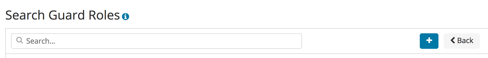
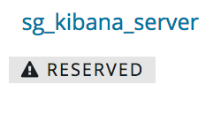
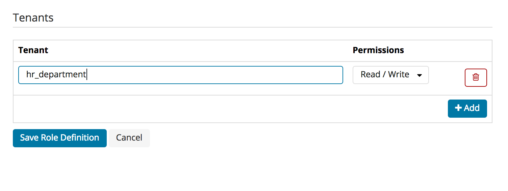

The Search Guard configuration GUI provides an intuitive way to manage users, roles and permissions, the Search Guard system status and the Search Guard license.
The configuration GUI is part of the Search Guard Kibana plugin and installed by default.
It uses the Search Guard REST management API under the hood, and detects automatically if this module is installed and if the current user has access to the API. In other words, there is nothing to configure in kibana.yml to use the GUI.
The configuration GUI is an Enterprise feature and not available in the Community Edition
The plugin automatically detects if a user has access to the REST API or not. All Search Guard roles that should have access must be configured in elasticsearch.yml with the following key:
searchguard.restapi.roles_enabled: ["sg_all_access", ...]
If you have restricted certain endpoints for the currently logged in user, the plugin will automatically disable these features.
For everything to work, the logged in user should have:
ACTIONGROUPS endpoint with GET methodindices:admin/validate/query on all indicesIf you log in with a user that has access to the GUI, you will see a new navigation entry called “Search Guard” in the left navigation pane.
If you click on it you will be taken to the main navigation screen.

To edit user, roles and permissions click on:
For managing Search Guard:
If you click on any of the resources menu items, you will see a screen which lists all resources with additional infos. For example, the “Search Guard Roles” listing will display the cluster permissions, any indices with configured permissions and the tenants for each role.

You can filter the list of resources and add a new resource by using the controls on the top of the table:

For each resource, you can decide to edit, clone or delete it by using the controls on the right:

If a resource is reserved, it is marked underneath the resource name. You cannot edit or delete reserved resources.

If you want to mark or unmark a resource, you need to change the readonly flag in the respective configuration YAML file and upload the changes via sgadmin. Example:
sg_kibana_server:
readonly: false
...
If you want to copy any resource, including reserved resources, you can always use the “Clone” button.
Depending on the type of resource, the edit screens will look slightly different. Most settings are self-explanatory.
With the permissions dialogue you can edit permissions for:
The recommended way to manage permissions is to use the pre-defined action groups that ship with Search Guard. If you want to edit permissions on a more fine-grained level, you can click on the “Advanced” checkbox will will let you edit single permissions.

To edit index-level permissions, you need to first select the index and the document type you want to edit permissions for. You can then so so in the permissions dialogue displayed below.

Note: Since documen types are deprecated in Elasticsearch 6, document type level permissions will be removed in Search Guard 7.
If you want to add new index- and document-type permissions, click on the “Add new index and document Type” button. You need to enter and save the indexname and document-type name before you can configure the permissions.

You can configure Document- and Field-Level-Security for each role and index separately. First, select the index you want to edit.
You can then enter the Document-Level security in the text field under “Document Level Security Query”. Clicking on the tick symbol will validate the query syntactically.
For Fiel-Level-Security you can list the fields, and specify if they should be included (white-listed) or excluded (black-listed).

The “Tenants” tab on the edit roles screen allows you to add and remove tenants for any role. You can define whether the role should have read/write acess or read-only access to the tenant:

By clicking on the Authentication & Authorization navigation entry, you can display the currently configured authentication and authorization domains. Disabled domains are greyed out. By clicking on the arrow symbol besided any domain, you can display its configuration.

The License & System Status displays the deployed Search Guard license, and also information about the loaded Search Guard modules and its version number.
By clicking on “Upload license” you can upload an Enterprise License to your cluster.

The “Purge Cache” button will purge all Search Guard internal caches on all nodes.